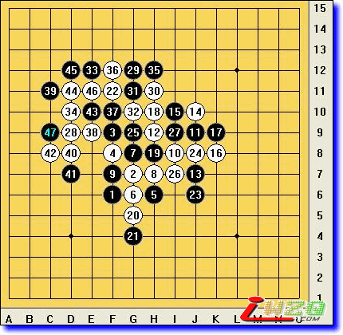

非天元开局的一盘现场实战
首页
五子棋教室
#1 非天元开局的一盘现场实战 作者：≈★真心★≈ 发表时间：2008-9-6 12:36:31
#2 Re:非天元开局的一盘现场实战 作者：潇洒 发表时间：2008-9-6 12:51:25
看不见图片
#3 Re:非天元开局的一盘现场实战 作者：有志青年 发表时间：2008-9-6 12:59:43
已经修正了，之前图片不在本站。
#4 Re:非天元开局的一盘现场实战 作者：逆刃 发表时间：2008-9-6 16:31:19
很精彩的一局实战！说明非天元开局照样可以下，可以平衡，而且变化量大。仔细看了一下，这盘棋中有个小的疏漏，24手有VCT，但白棋实战中选择这个点也是理所当然，在计算量大不能确定的时候，保证大优总比计算失误要好，毕竟人脑不是电脑，电脑尚且不能做到万无一失，更何况人呢！［本站用户 失落刀 于 2009-3-15 11:36:02 花5个金币送您鲜花一朵］
#5 Re:非天元开局的一盘现场实战 作者：nara 发表时间：2008-9-6 17:49:58
白24手,G9直接VCT,贴两张简图.
=======上图对应的爱五子棋谱代码如下，以便你拆解：========
f6g7f9f8h6g6g8h7f7i8j9h9j7j10i10k8k9h10h8g5g4f11j6g9i11d10
======================================================
=======上图对应的爱五子棋谱代码如下，以便你拆解：========
f6g7f9f8h6g6g8h7f7i8j9h9j7j10i10k8k9h10h8g5g4f11j6g9e7g12
======================================================
#6 Re:非天元开局的一盘现场实战 作者：不知 发表时间：2008-9-6 20:33:23
 我是守旧派，不支持新规则随意改，至于原因，过段时间发表～
我是守旧派，不支持新规则随意改，至于原因，过段时间发表～
#7 Re:非天元开局的一盘现场实战 作者：17号蓝星仔 发表时间：2008-9-7 20:41:31
新规则有意思 不管以后规则是怎样 我都喜欢五子棋
#8 Re:非天元开局的一盘现场实战 作者：其怪 发表时间：2008-9-11 14:40:10
进来看一眼大师
#9 Re:非天元开局的一盘现场实战 作者：我爱五子棋伯园 发表时间：2008-10-14 14:15:04
新规则带动新变化，好题
#10 Re:非天元开局的一盘现场实战 作者：刀魂 发表时间：2009-3-15 11:30:40
支持 真心老师的 新规则，有变化，才有新的棋路，这样才能更好的推动连珠的进步
#11 Re:非天元开局的一盘现场实战 作者：莫斯卡 发表时间：2009-3-19 13:22:12
黑白双方下的都比较保守,白实战中做棋强度不够.
#12 Re:非天元开局的一盘现场实战 作者：来客沙丝 发表时间：2009-3-19 20:05:06
身临其境，好帖。
#13 Re:非天元开局的一盘现场实战 作者：弓长巾凡 发表时间：2009-3-26 13:05:03

要是黑棋走运的话再假设白犯一点点错误的话，黑按F14,G13,I13,I12, H14走好像能双杀哦